Bucurie in cutie
Bucurie in cutie este un proiect care doreste sa ofere copiilor cu dizabilitati si a celor din familii dezorganizate perspectiva unei vieti normale si bucuria unei copilarii frumoase. Reprezintă o încercare minusculă de a face lumea un loc mai frumos. În fiecare an, în preajmă sărbătorilor de Crăciun, vrem să punem un zâmbet pe chipurile a zeci de mii de copii din orașele în care locuim. Organizația se ocupă de strângerea,transportul si distribuirea pachetelor.
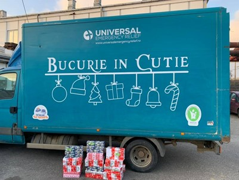
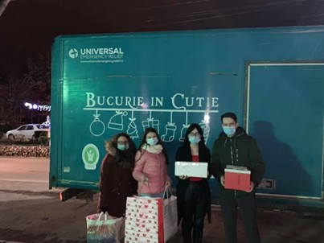
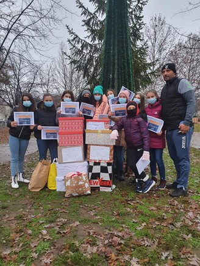
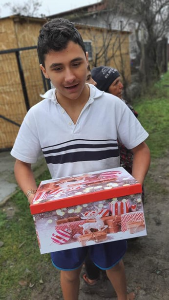
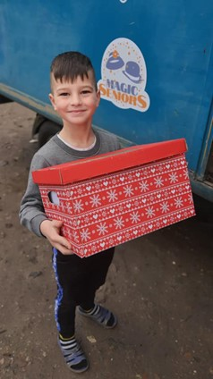
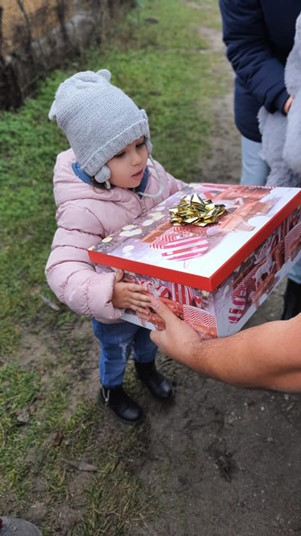
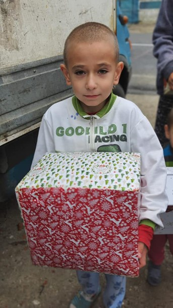
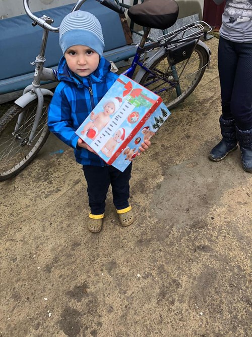
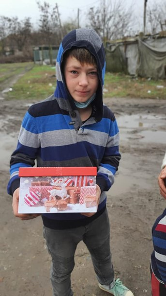
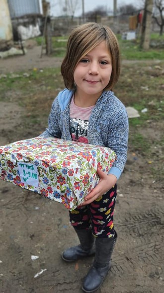
Bucurie de martie
Bucurie de Martie este un proiect prin care ne dorim sa rupem bariera intergenerationala ducand primavera in casele oamenilor. Copii confectioneaza felicitari si martisoare care apoi sunt distribuite impreuna cu o punga de alimente persoanelor varstine.
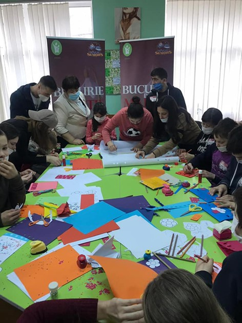
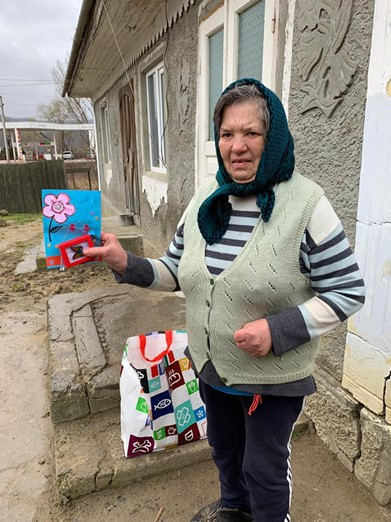
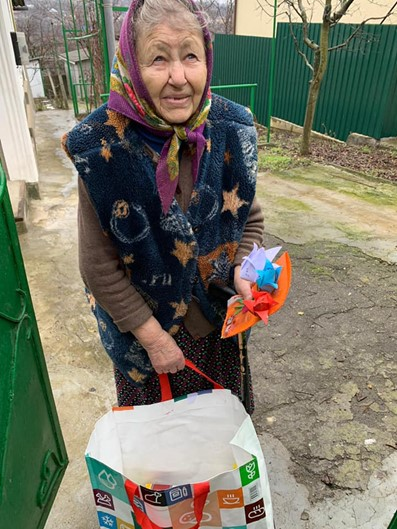
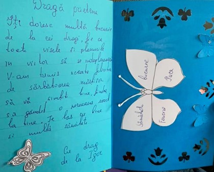